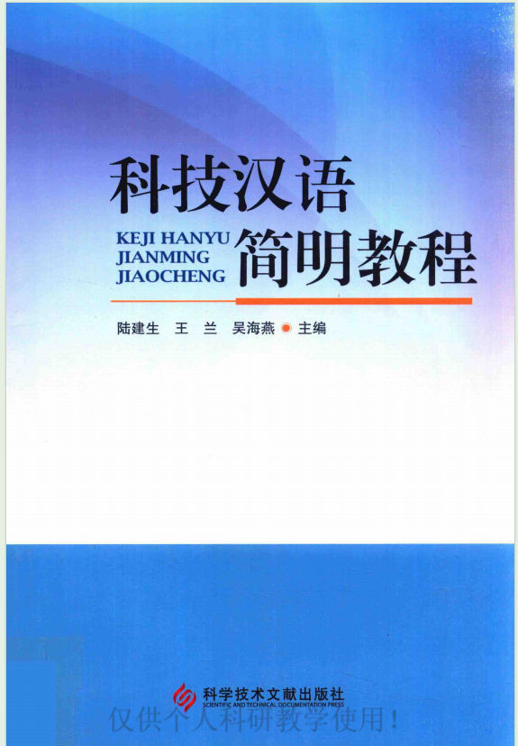
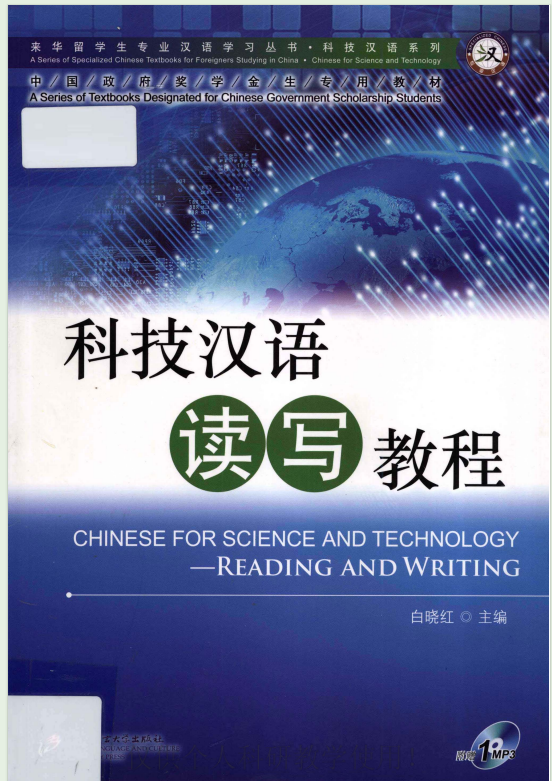
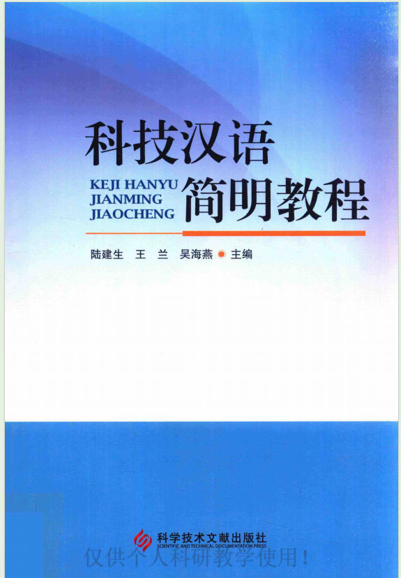
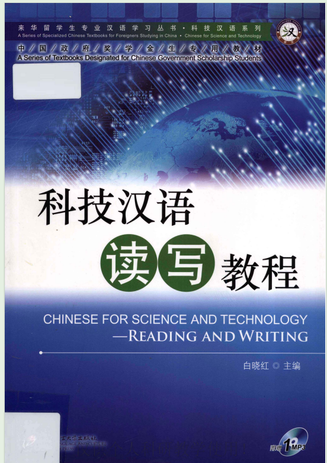

课程介绍
科技汉语课程的设置，是为了帮助留学生克服语言障碍，在短时间内适应科技类汉语言的特点，顺利进入理工类专业课的学习，并使留学生能运用汉语获取专业知识。本网站致力于为各位汉语学习者提供丰富的汉语学习资源，帮助大家学习科技汉语课程。如果您有任何建议，请联系2849846006@qq.com。
书目推荐


科技汉语简明教程/陆建生，王兰，吴海燕主编.-北京:科学技术文献出版社，2017.1 ISBN978-7-5189-2223-9

科技汉语读写教程/白晓红等编著.一北京:北京语育大学出版社，2012.1 ISBN 978-7-5619-3228-5
